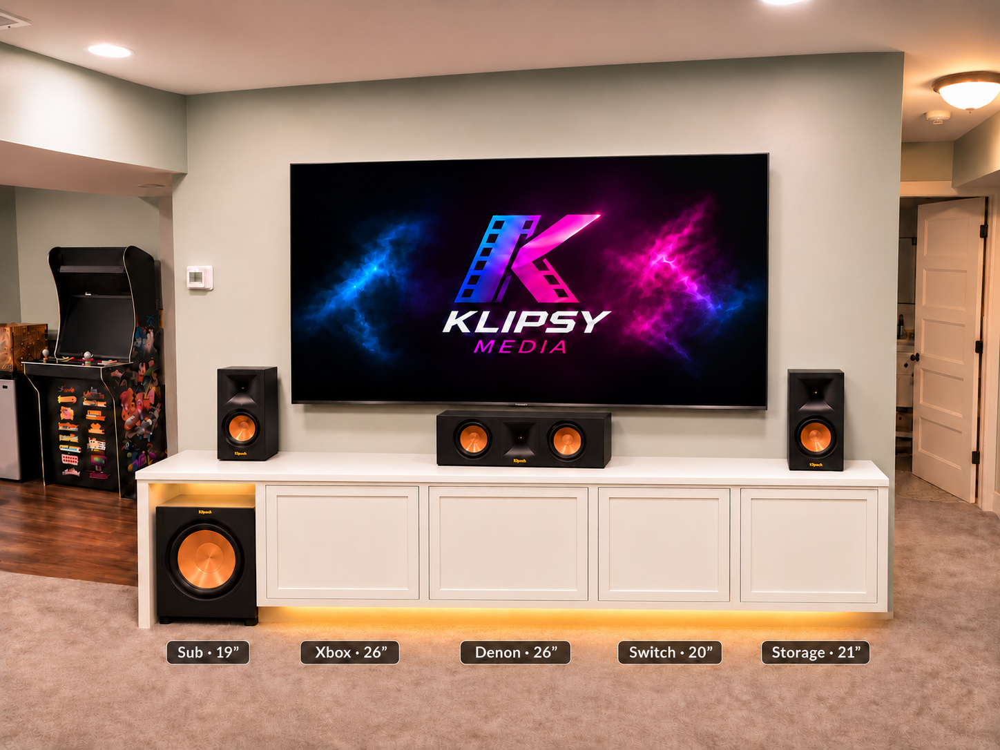
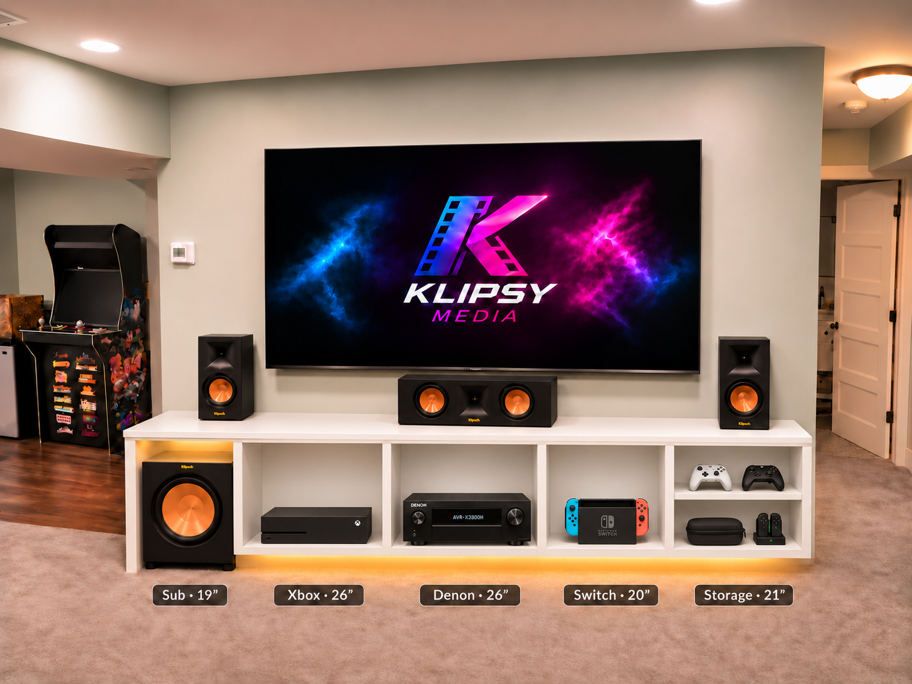
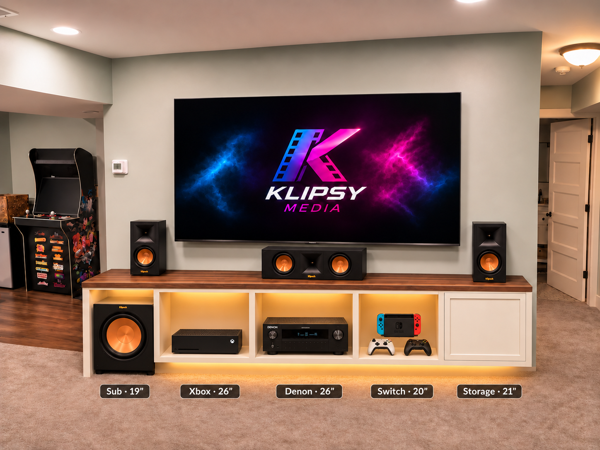

THE BUILD COMPANION
A place for everything.
A plan for every cut.
Four bays. Optional doors. One continuous 112″ painted-white top.
Look inside the cabinets, check the buy list, and work through the build.
THE VISION
The look we’re building toward.

LOOK INSIDE / SAME FOUR BOXES
The cabinets without doors.
All four bays are visible beneath the current white top: Xbox, receiver, Switch, and storage. Install the far-right storage door first if you prefer; the other three doors can be added later.

A closer look at the cabinet fronts
On a phone, swipe across the close-up. Tap either image to inspect the full-size version. Visible face strips cover the module seams; rear mounting strips, cable routes, false backs and ventilation are not construction details in this rendering.
DESIGN COMPARISON
Three open bays. One storage door.

01 / EXPLORE
The entertainment center
Select a bay to inspect its dimensions. All measurements in inches; drawings are schematics.
Centered on a 125¼″ wall · 6⅝″ at each end · 8½″ beneath the floating cabinets · PDF p. 3
CURRENT TOP PLAN · PDF P. 14
Joined. Filled. Painted white.
One finished top spans all 112″, approximately 20¼″ deep, using shorter joined panels. The former butcher-block purchase is removed. Material and thickness remain to be selected; retain the plywood box tops and the independent subwoofer surround support.
- Choose the stock. Confirm paint-grade substrate, thickness, joint detail and fastening before cutting. Finished height is 24½″ plus the selected top thickness.
- Support the seam. Locate it over a supported cabinet area, away from a box joint. Keep the panel faces flush using substrate-appropriate joinery and backing where needed. Filler supplies the surface finish, not the structural connection.
- Finish as one surface. Let adhesive cure, fill and sand the stable seam, seal edges, prime, sand and paint uniformly. Follow the coating and substrate instructions and allow the finish to cure.
The original three-sheet layout covers the boxes, shelves, surround and one door blank. Reserve additional stock for the top and three more doors. Four-door Shaker construction and a room-air intake/exhaust path are still to be detailed. Interior lights are optional behind opaque doors; keep the underside glow.
Read top and ventilation details · p. 14 ↗SHOPPING / MATERIALS & TOOLS
The buy list.
Check off items you already own, borrow, or buy. Start with the box materials; select the top, optional doors, removable backs, mounting connections, and cooling before buying their final stock and hardware.
Install the storage door first and add up to three equipment-bay doors later. Allow hinge clearance now; provide intake and exhaust before operating electronics behind closed doors. Purchase checkmarks save separately in this browser and are not included in the build-progress export. Use “Print build checklist” below to print this list too.
02 / PREPARE
Measure first. Cut once.
Sides fit between full-width tops and bottoms. This calculator assumes matching thickness throughout. Measure both panels if they differ.
| Part | Qty | Cut size | When |
|---|
See the sheet-by-sheet breakdown
Keep rough halves at least 47″ along the original 96″ direction. Allow ⅛″ kerfs and square reference edges. Measure from each fresh edge; keep the blade in the waste. Diagram widths represent finished parts; gaps show kerfs schematically. PDF pp. 2, 12.
03 / BUILD
One step at a time.
Your checklist and notes save in this browser. Export a backup to move them to another device.